S1Hand0.0–1.8 s
Who in the world made this???
We see: Grace's hand holds the flashlight upright in front of dusk pine trees, side panel glowing, orange button facing us. The camera pushes in slowly.
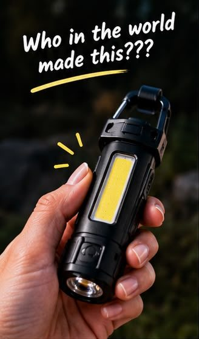
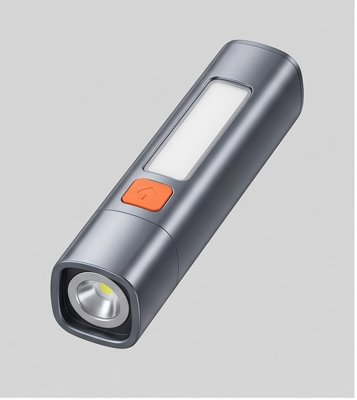
Grace · your script word for word · 9 shots · about 25 s · one dusk campsite · built from your storyboard panels, with the real grey TINEKO from the reference sheet in every shot.
Who in the world made this???
We see: Grace's hand holds the flashlight upright in front of dusk pine trees, side panel glowing, orange button facing us. The camera pushes in slowly.


Because what do you mean I can charge my phone with this,
We see: The flashlight lies on a wooden camp table with a white cable running from the USB port by its hook to a phone. The phone screen shows only a green battery symbol. Slow dolly along the cable.
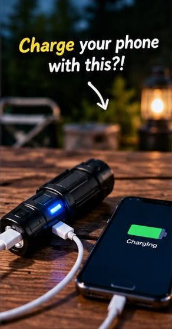
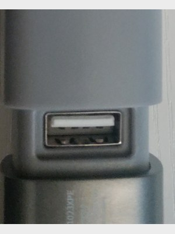
hang it up in my tent for hands-free lighting,
We see: Inside a tent, the flashlight hangs by its carabiner from the roof loop, its side panel lighting the tent softly. The camera tilts slowly from the sleeping bag up to the light.
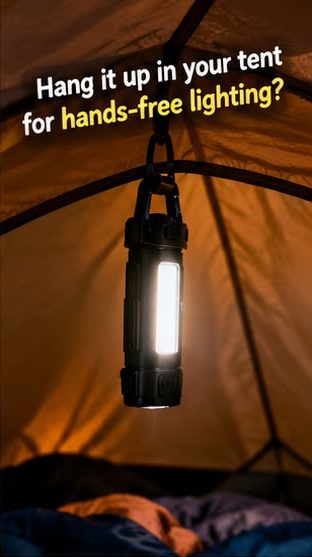
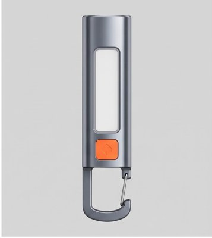
AND use it as a regular flashlight with a focused beam?
We see: First-person view: the hand at the bottom of the frame points the lens down a forest trail and the beam runs along the path. The flashlight doesn't turn (it warped last time), and the light lands only where the lens points.
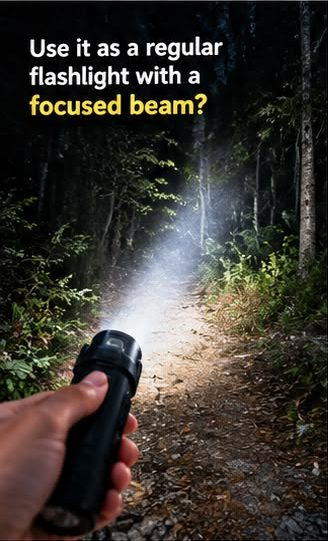
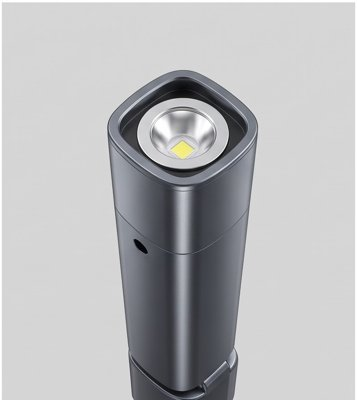
And it has a flickering mode, too, for emergencies!
Fixed from the guide: the front lens flickers and the side panel stays dark.
We see: The flashlight stands on a rock at the edge of the campsite, turned three-quarters so we see the round lens, which flickers on and off into the trees. The camera drifts in slowly. If the model won't flicker cleanly, I add the flicker for free in the edit.
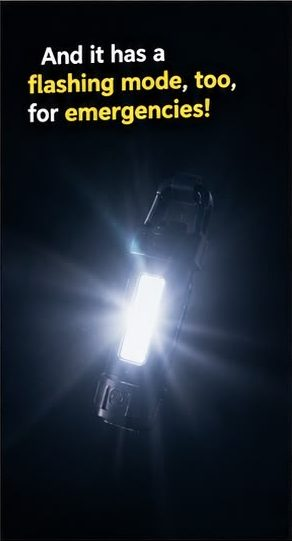
This is the kind of gadget that makes sense to keep with your camping gear
We see: The flashlight is clipped to a backpack strap with a tent and mountains behind it at dusk, side panel glowing. Slow dolly around the backpack.
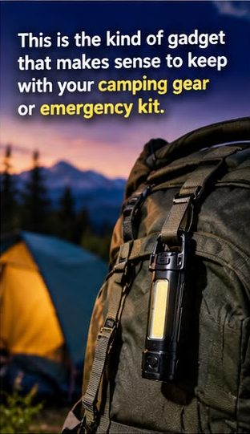
or emergency kit.
We see: The hand grips the flashlight and sets it into an open emergency bag with bandages and a water bottle. The bag has no cross or logo.
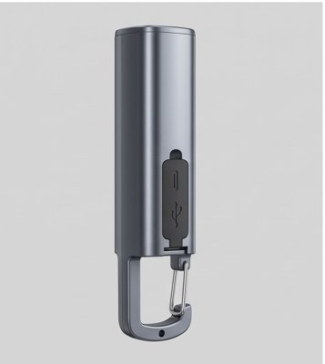
And it costs less than a McDonald's Happy Meal!
Fixed from the guide: no Happy Meal or other brand on screen. Only the voice says it.
We see: The hand stands the flashlight upright on the camp picnic table with the side panel on, then lets go. Campsite blurred behind. Slow push-in.
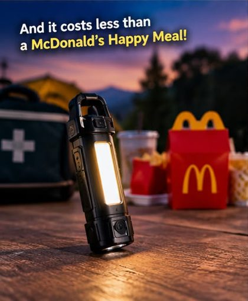
I'm linking it in the orange cart for you!
We see: A close-up of the hand clipping the carabiner onto a backpack strap, with the orange button facing us and dusk mountains behind. No cart icon.
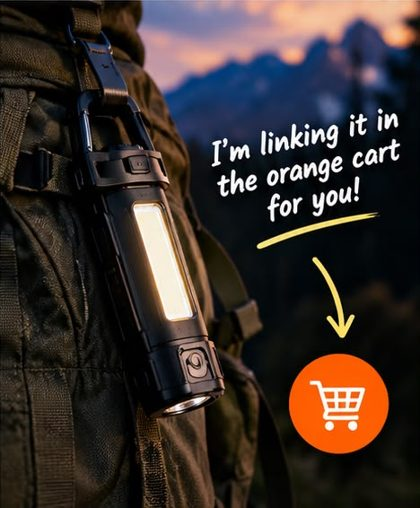
| Free: you make the 9 stills in your Gemini app (I send the images + one prompt each) | $0 |
| Paid: 9 stills on Kie (Gemini 3 Pro Image), one likely redo included | $0.81–$0.90 |
| Later, after you approve the stills: 9 product-lock clips (Omni on Kie) + Grace's voice | about $2.84–$3.16 |
| Kie spend so far in October (no cap this month) | $151.23 |